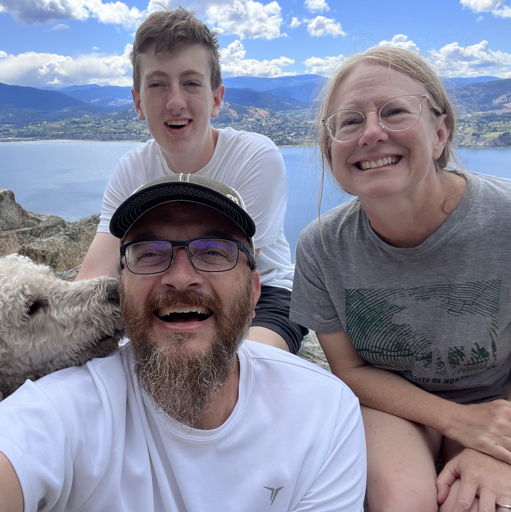

Updates
Info
For an overview of this journey see the timeline.
Don’t have our contact information and want to reach us? Use this form.
Note: if you do know how to reach us, use our email, or message us (no need to use the form).
Visitation status: by appointment only
Humbled by generosity

Today marks two weeks here at BC Children’s hospital. We continue to receive amazing care from the medical team, and we continue to be carried/surrounded by the love and prayers of all of you our friends and family, and we are humbled by your help!
Thank you all for your words of encouragement, gifts, and prayers. It seems you are unstoppable in finding ways to pour out your love and generosity. A number of days ago some friends convinced us that this GoFundMe page would be a good idea to support us in the expense of this current journey and to give people a means of providing tangible support. Please do not feel any obligation to give.
Reflections on May 1
Yesterday, was a great day! The issue of Sam’s feeding tube resolved by having to remove the tube. This turned out for the best as Sam got his appetite back. I can’t remember the last time Sam ate so well! Sam also noted that it is much easier to eat without the tube in. The medical team is also happy about this latest development.
Activity levels are also coming up. Sam is able to walk around some more. He was able to walk the hall here and he spent an hour sitting up and talking with his Uncle Cal.
These recent changes certainly give us hope for the future and definitely joy in the here-and-now. We are grateful for all of this. We have been cautioned that these improvements can be expected, but that the only way to evaluate if the cancer is responding is to complete new scans to see what has happened to the tumors. We will continue to choose hope and take joy in each victory.
Going forward, the next days ahead should be routine with medicines, bloodwork, checking vitals, and a new addition of prescribed physiotherapy. In about a week Sam will go for imaging and then the next steps will be determined.
Needs, concerns, and victories
Mostly victories today!
Tina had a a full night sleep in our room at the [Ronald McDonald House] (night of April 30).
We all slept well last night (the family still is). Sam commented how cozy he felt after his nurse re-tucked him in following bloodwork and a bathroom break.
Sam has his appetite back.
Sam’s activity level is improving.
I am thankful for messages and outpourings of love that we have received.
The cancer, and that it responds treatment, remains our largest concern.